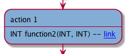
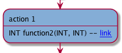
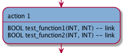

Calls to functions / class methods
Some important actions are performed by calls to other functions or class methods. We can highlight these calls and make them appear explicitly in the diagram by using a postfix annotation //$ at the end of a code line. This annotation also inserts a hyperlink to the diagrams for the functions or methods. This allows a developer to browse from the caller’s diagram to the called function’s diagram.
[not implemented] We could further distinguish when a certain action uses a call(s) or when this action is actually performed entirely within a call (see 'Main call').
annotation
//$ do something
code line involving method 1 //$
code line involving function 2 //$
code line involving method 3
Note: for C++ statements split across multiple lines, Flowgen looks for calls in the annotated line(s) only.
Note: it is possible to add a ‘normal’ comment, //comment, (not relevant to the diagrams) after the //$ postfix.
Zooming: [not implemented] it is possible to add a zooming option to the postfix, such as for example //$1. The call(s) on that code line will be associated to that zoom level.
representation in the diagram

A click of the mouse will open the hyperlink to the relevant function/method diagram.
examples
//$ action 1
int test, arg1, arg2,
int argument_for_sample_calculation_of_type_alpha
test = function1(arg1, arg2) &&
function2(arg1,
argument_for_sample_calculation_of_type_alpha); //$

//$ action 1
int test, arg1, arg2
int argument_for_sample_calculation_of_type_alpha
test = function1(arg1, arg2) &&
function2(arg1, //$
argument_for_sample_calculation_of_type_alpha);

//$ action 1
bool test
int arg1, arg2, argument_for_sample_calculation_of_type_alpha
test = test_function1(arg1, arg2) && //$
test_function2(arg1, //$
argument_for_sample_calculation_of_type_alpha); //$
